In China Employee Termination: Pulse QA-Gatecard Brief for Foreign Employers (2026 Hourly Run)
Key takeaways
- Foreign employers improve China termination outcomes by treating each stage as a quality gate, not a checkbox.
- QA gatecards make release decisions auditable and consistent across legal, HR, payroll, and local teams.
- Most preventable failures still come from defects in route, evidence, narrative, settlement, and closure quality.
- Payroll and IIT treatment should pass QA before communication release, not after.
- Legal depth matters, but gate quality determines whether legal strategy survives execution.
Pulse opener: quality defects compound under deadline pressure
In cross-border operations, teams often see termination mistakes as isolated issues. In reality, many are quality defects that pass through gates unchecked: ambiguous route language, incomplete evidence ownership, drifting communication text, unresolved settlement assumptions, or weak closure controls. Once these defects move downstream, correction cost rises quickly.
This run rotates to a QA gatecard format to help foreign operators catch defects early and enforce corrective actions before release.
Plain-language legal context first
China termination decisions are generally route-based under labor law and implementation regulations. In dispute settings, defensibility often depends on whether case execution remains coherent with the selected legal route.
For foreign teams, quality-gate discipline is therefore a legal-risk control.
QA gatecards: what must pass before progressing
Gatecard 1 — Route QA gate
Quality question: Is route rationale explicit, stable, and approved?
Pass evidence: version-locked route memo with confidence and assumptions.
Fail action: pause case and revalidate legal route before downstream work.
Gatecard 2 — Evidence QA gate
Quality question: Are critical facts attributable and verifiable?
Pass evidence: evidence index (owner/source/status) with timestamps.
Fail action: hold progression until critical evidence gaps are closed.
Gatecard 3 — Narrative QA gate
Quality question: Do legal and HR outputs tell the same story?
Pass evidence: single master communication baseline and controlled change log.
Fail action: freeze communications, reconcile text, and re-approve.
Gatecard 4 — Settlement QA gate
Quality question: Are payroll/IIT assumptions validated and documented pre-release?
Pass evidence: payroll/legal joint sign-off on settlement worksheet and tax handling.
Fail action: escalate and resolve treatment conflicts before release.
Gatecard 5 — Local-variance QA gate
Quality question: Is city-level uncertainty explicitly represented in decision records?
Pass evidence: local variance memo with options, exposure range, owner deadline.
Fail action: governance escalation with time-bound decision owner.
Gatecard 6 — Closure QA gate
Quality question: Is post-case retrieval demonstrably ready?
Pass evidence: retrieval test pass record with named closure owner.
Fail action: reopen closure and remediate archive gaps.
Practical implications for foreign operators
QA gatecards improve execution consistency across time zones and vendors. They also reduce status ambiguity in leadership updates by showing gate pass/fail evidence rather than generic progress descriptions.
Operations module
A) SOP by role ownership
Legal: own route gate and legal assumption quality.
HR: own narrative gate and chronology integrity.
Payroll: own settlement gate and tax-treatment readiness.
Manager: own communication-boundary compliance.
Vendor/EOR: maintain gate status continuity and evidence links.
B) Document checklist and gate controls
Required artifacts:
- route-confidence memo,
- evidence index,
- communication baseline,
- settlement worksheet + tax notes,
- local variance memo,
- retrieval-test record,
- timestamped approvals.
Gate rules:
- no progression with unresolved critical gate failures,
- every failed gate requires owner/date and closure evidence.
C) Exception pathways
Pathway A: route gate fail → legal hold and reset.
Pathway B: evidence gate fail → ownership closure hold.
Pathway C: narrative gate fail → freeze communication outputs.
Pathway D: settlement gate fail → payroll/legal escalation hold.
Pathway E: closure gate fail → reopen closure state.
D) System controls and audit fields
Suggested fields:
gate_typegate_statusgate_severityownerdeadlineclosure_evidencerelease_block_flag
Control standards:
- auto-block release on high-severity gate failures,
- immutable logs for gate state changes,
- monthly recurrence review by gate type/location.
Common mistakes and prevention
Mistake: passing gates on confidence, not evidence
Prevention: require artifact links for every gate pass.
Mistake: settlement gate deferred until cutoff
Prevention: enforce settlement QA before communication release.
Mistake: local variance treated as optional commentary
Prevention: make local-variance gate mandatory.
Mistake: closure gate skipped during time pressure
Prevention: keep retrieval test non-optional.
Mistake: no defect trend tracking
Prevention: review recurring gate failures monthly and redesign process.
What to watch next
Foreign operators should monitor which gate fails most frequently and how quickly failures are cleared. Persistent failure in one gate usually indicates a process design issue, not isolated case complexity.
QA governance cadence
Use weekly gate reviews for active cases and monthly trend reviews for structural quality improvements. Weekly cadence protects immediate release quality; monthly cadence prevents recurrence.
QA threshold policy
Classify gate failures by severity. High-severity failures in route, evidence, settlement, or closure should block release by default. Medium-severity failures may proceed only with documented owner/date remediation and governance visibility.
Executive QA dashboard
Track four indicators:
1) high-severity gate pass rate pre-release,
2) mean time to close failed gates,
3) override frequency,
4) recurrence by gate type and location/function.
QA calibration across regions
For multinational teams, gate standards should be calibrated monthly so pass/fail decisions stay consistent across locations. A short calibration review can compare recent gate decisions, align evidence expectations, and reduce interpretation drift between teams. Without calibration, one office may approve with lighter evidence while another requires stricter proof, creating uneven risk tolerance.
Calibration should focus first on route, settlement, and local-variance gates, where subjective interpretation is most likely.
Gate response SLA matrix
Each failed gate should trigger a time-bound response:
- Route/evidence high-severity fail: same-day hold and owner action.
- Narrative fail: freeze communication until reconciliation and re-approval.
- Settlement fail: immediate payroll/legal review before next cutoff.
- Closure fail: reopen and complete retrieval remediation within one business day.
A response clock prevents failed gates from becoming long-lived “known issues.”
FAQ
Is QA gatecard guidance legal advice?
No. It is an operational framework informed by legal and practitioner sources.
Can smaller teams apply this model?
Yes. A simple gate register with owner and evidence links works.
Which gate failures are usually most expensive?
Settlement and narrative gate failures often generate disproportionate downstream costs.
Does this replace local counsel?
No. It complements local legal/payroll advice with process quality controls.
Is this model uniform across all China cities?
Baseline model is broad, but local practice differences still require localization.
What KPI should leadership start with?
High-severity gate pass rate before release.
Legal appendix (secondary depth)
1) Core legal anchors
The PRC Labor Contract Law and implementation regulations provide statutory framework for termination routes and obligations. SPC interpretations provide labor-dispute application context.
2) Practitioner and market synthesis
Practitioner guidance emphasizes route/process coherence and robust execution controls. Market/payroll context reinforces settlement/tax handling as risk-sensitive domains.
3) Residual uncertainty
City-level variance and language nuance can affect edge-case outcomes; high-exposure matters require localized professional advice.
Source-fit note for this run
This run maintained required source mix and rotated to a QA-gatecard structure for stronger pre-release quality controls. Repetitive dependency phrasing was replaced with defect-and-correction gate logic.
Disclaimer
This content is informational only and does not constitute legal, tax, payroll, accounting, or compliance advice. Employers should seek qualified local professional advice for case-specific decisions.
Sources
- National People's Congress. Labor Contract Law of the PRC (English text). Accessed 2026-03-01: http://www.npc.gov.cn/zgrdw/englishnpc/Law/2007-12/13/content_1384064.htm
- State Council. Implementation Regulations of the Labor Contract Law (Decree No. 535). Accessed 2026-03-01: https://www.gov.cn/gongbao/content/2008/content_1124615.htm
- Supreme People's Court. Interpretation (I) on Application of Labor Dispute Law. Accessed 2026-03-01: https://www.court.gov.cn/fabu/xiangqing/243981.html
- China Briefing. Employee Termination in China. Updated 2025-10-17, accessed 2026-03-01: https://www.china-briefing.com/news/employee-termination-in-china/
- Littler. Key Recent Developments in China's Employment Law. Published 2024-03-20, accessed 2026-03-01: https://www.littler.com/news-analysis/asap/key-recent-developments-chinas-employment-law-china-us-comparative-perspective
- PwC. PRC Individual Taxes on Personal Income (Tax Summaries). Accessed 2026-03-01: https://taxsummaries.pwc.com/peoples-republic-of-china/individual/taxes-on-personal-income
Need local employment support in China?
If you need a compliance-first partner for hiring, payroll, and risk controls in China, China-Payroll.com can help evaluate the right setup.
Image Prompt Pack
Create a 16:9 hero image for article title: 'In China Employee Termination: Pulse QA-Gatecard Brief for Foreign Employers (2026 Hourly Run)'. Scene: global operations team evaluating workforce model options for China market entry. Include motifs: decision matr…